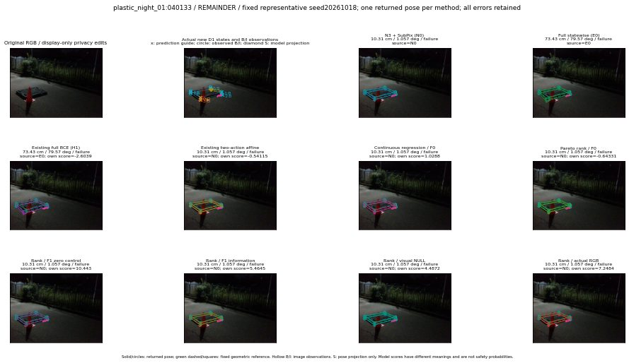

실선은 반환 자세, 초록 점선은 고정 기하 참조입니다. S는 영상 관측이 아닙니다. 점수는 모델별 의미가 다르며 보정된 안전 확률이 아닙니다. 개인정보 처리는 표시 사본에만 적용했습니다.
| 방법·seed | 위치 / 회전 / 공동성공 | 실제 출처 | 선택 후보 | 각 모델 자체 점수 |
|---|---|---|---|---|
| N0 | 10.31 cm / 1.057 deg / failure | N0 | N/A | N/A |
| E0 | 73.43 cm / 79.57 deg / failure | E0 | N/A | N/A |
| E0_REGENERATED | 73.43 cm / 79.57 deg / failure | E0 | E0_REGENERATED | N/A |
| POSEFIX_SUBPIX_PF_ANCHOR | 54.32 cm / 83.61 deg / failure | OTHER | N/A | N/A |
| POSEFIX_SUBPIX_YOLO_ANCHOR | 54.32 cm / 83.61 deg / failure | OTHER | N/A | N/A |
| D1_H1_MLP_s20261018 | 73.43 cm / 79.57 deg / failure | E0 | E0_REGENERATED | -2.6039440631866455 |
| D1_H1_MLP_s20261019 | 73.43 cm / 79.57 deg / failure | E0 | E0_REGENERATED | -2.1220085620880127 |
| D1_H1_MLP_s20261020 | 10.31 cm / 1.057 deg / failure | N0 | N0 | -3.298339366912842 |
| D1_H1_PAIR_MLP_s20261018 | 10.31 cm / 1.057 deg / failure | N0 | N0 | -1.6260207891464233 |
| D1_H1_PAIR_MLP_s20261019 | 10.31 cm / 1.057 deg / failure | N0 | N0 | -1.7055283784866333 |
| D1_H1_PAIR_MLP_s20261020 | 10.31 cm / 1.057 deg / failure | N0 | N0 | -2.1249423027038574 |
| D1_H1_PAIR_ROLE_AFFINE_s20261018 | 10.31 cm / 1.057 deg / failure | N0 | N0 | -0.5411490797996521 |
| D1_H1_PAIR_ROLE_AFFINE_s20261019 | 10.31 cm / 1.057 deg / failure | N0 | N0 | -1.0269602537155151 |
| D1_H1_PAIR_ROLE_AFFINE_s20261020 | 10.31 cm / 1.057 deg / failure | N0 | N0 | -0.5629299283027649 |
| R_CONT_F0_s20261018 | 10.31 cm / 1.057 deg / failure | N0 | N0 | 1.0288465023040771 |
| R_CONT_F0_s20261019 | 10.31 cm / 1.057 deg / failure | N0 | N0 | 1.0659217834472656 |
| R_CONT_F0_s20261020 | 10.31 cm / 1.057 deg / failure | N0 | N0 | 1.3348642587661743 |
| R_ORDER_F0_s20261018 | 10.31 cm / 1.057 deg / failure | N0 | N0 | -0.6433145999908447 |
| R_ORDER_F0_s20261019 | 10.31 cm / 1.057 deg / failure | N0 | N0 | 1.1847693920135498 |
| R_ORDER_F0_s20261020 | 10.31 cm / 1.057 deg / failure | N0 | N0 | -0.22582590579986572 |
| R_ORDER_F1_ZERO_s20261018 | 10.31 cm / 1.057 deg / failure | N0 | N0 | 10.443243026733398 |
| R_ORDER_F1_ZERO_s20261019 | 10.31 cm / 1.057 deg / failure | N0 | N0 | -0.9513898491859436 |
| R_ORDER_F1_ZERO_s20261020 | 10.31 cm / 1.057 deg / failure | N0 | N0 | 6.243780136108398 |
| R_ORDER_F1_s20261018 | 10.31 cm / 1.057 deg / failure | N0 | N0 | 5.464493751525879 |
| R_ORDER_F1_s20261019 | 9.403 cm / 1.767 deg / failure | OTHER | G13/ORIGINAL_WD/endpoint/19 | 6.1467132568359375 |
| R_ORDER_F1_s20261020 | 10.31 cm / 1.057 deg / failure | N0 | N0 | 5.994472026824951 |
| V_ORDER_NULL_s20261018 | 10.31 cm / 1.057 deg / failure | N0 | N0 | 4.487211227416992 |
| V_ORDER_NULL_s20261019 | 9.403 cm / 1.767 deg / failure | OTHER | G13/ORIGINAL_WD/endpoint/19 | 1.7819161415100098 |
| V_ORDER_NULL_s20261020 | 10.31 cm / 1.057 deg / failure | N0 | N0 | 4.298059463500977 |
| V_ORDER_RGB_s20261018 | 10.31 cm / 1.057 deg / failure | N0 | N0 | 7.248448371887207 |
| V_ORDER_RGB_s20261019 | 9.304 cm / 1.748 deg / failure | OTHER | G10/ORIGINAL_WD/selected | 0.6379151940345764 |
| V_ORDER_RGB_s20261020 | 10.31 cm / 1.057 deg / failure | N0 | N0 | -4.6575236320495605 |